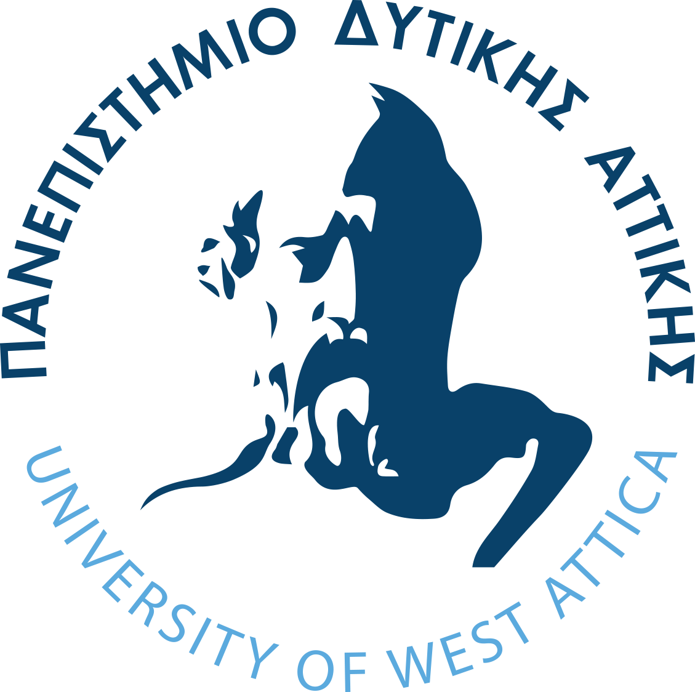

Computer and Software Enthusiast • Strong Systems and Application Development Background
Informatics and Computer Engineer with 4+ years of experience in various technologies ranging from Front-end, Back-end, Android Development, Database Management, Old & New Technologies, several programming languages and frameworks and DevOps Engineering tools
University of West Attica
Master’s Degree in Informatics and Computer Engineering
2022 – Present

Special Challenge by ΔΕΗ/PPC | AI Hackathon by ACE 2026
Developed an AI system using OCR and Retrieval-Augmented Generation + Hybrid Solutions to analyze energy bills and provide automated insights for the ACE AI Hackathon 2026.
Project Android mobile platform for scuba diving insights, including a powerful rating algorithm for Scuba Divers.
Created an interactive lightweight promotional memory game for an event
Expanding expertise in full-stack development.
Building RESTful APIs with Spring Boot and connecting them to Android apps using Retrofit.
Continuing to refine Kotlin and Jetpack Compose for Android development.